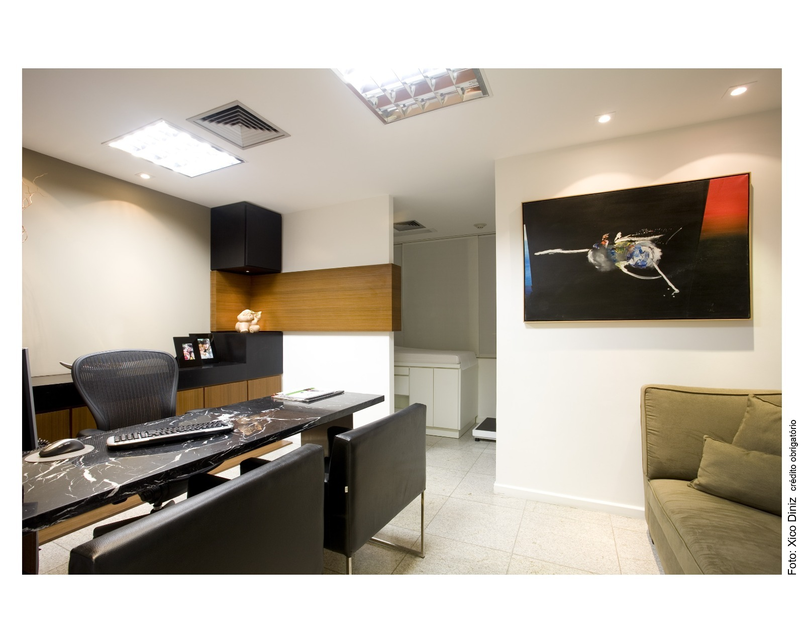
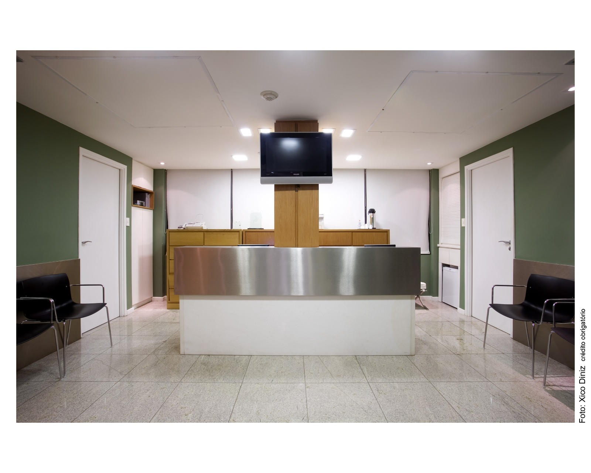

Dr. Marcos Leão
Cirurgia do aparelho digestivo / Cirurgia Geral
CRM: 9643

A Clínica Baros iniciou suas atividades em agosto de 1999, sendo pioneira no Norte e Nordeste na realização da cirurgia bariátrica.
Ao longo dessa trajetória, consolidou-se como referência no tratamento da obesidade, unindo experiência, qualificação técnica e segurança em cada etapa do cuidado. Com anos de atuação e milhares de pacientes atendidos, nossa equipe acumulou conhecimento e expertise para conduzir procedimentos com excelência.
Além da experiência construída ao longo do tempo, estamos em constante atualização, acompanhando a evolução das técnicas para oferecer soluções adequadas a cada caso, sempre com uma abordagem personalizada e acompanhamento multiprofissional.

Equipe altamente qualificada, com ampla experiência no tratamento da obesidade e realização de cirurgias.
Cirurgia do aparelho digestivo / Cirurgia Geral
CRM: 9643

Cirurgia do aparelho digestivo / Cirurgia Geral
CRM: 11157

Cirurgia do aparelho digestivo / Cirurgia Geral
CRM: 10119

Cirurgia do aparelho digestivo / Cirurgia Geral
CRM: 22681
.jpg)
Cirurgia do aparelho digestivo / Cirurgia Geral
CRM: 20218
Cirurgia Plástica / Reparadora
CRM: 17765
.jpg)
Cirurgia Plástica / Reparadora
CRM: 29488
Gastroenterologista
CRM: 10207
Endocrinologista
CRM: 11833
Nefrologista
CRM: 12544
CRP: 03/20317
CRP: 03/16243
CRP: 03/15698
CRP: 03/5311
CRN: 3169
CRN: 02716
CRN: 21929
CRN: 9101
CREFITO: 96653
Ambientes preparados para acolher você com excelência em todas as fases do tratamento.



A maior prova da nossa dedicação está nas histórias de transformação de quem confiou em nós.
"Equipe acolhedora e extremamente preparada em todas as etapas do tratamento. Me senti segura desde a primeira avaliação até o acompanhamento pós-operatório."
Maria Silva
Paciente Bariátrica
"A Clínica Baros não mudou apenas meu corpo, devolveu minha qualidade de vida. O acompanhamento multidisciplinar fez toda a diferença na minha recuperação."
João Costa
Paciente Metabólico